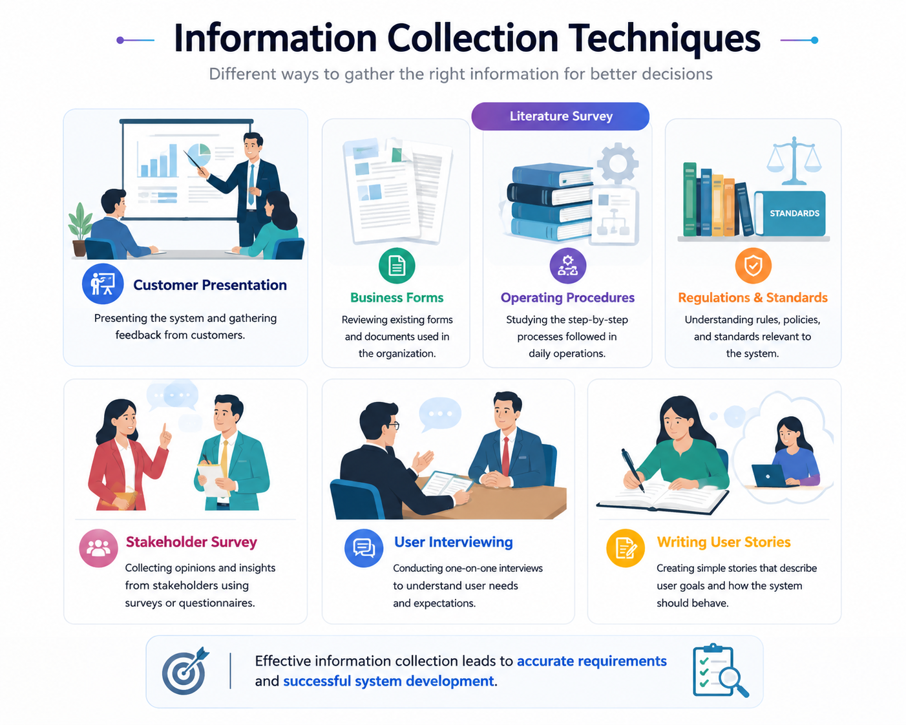
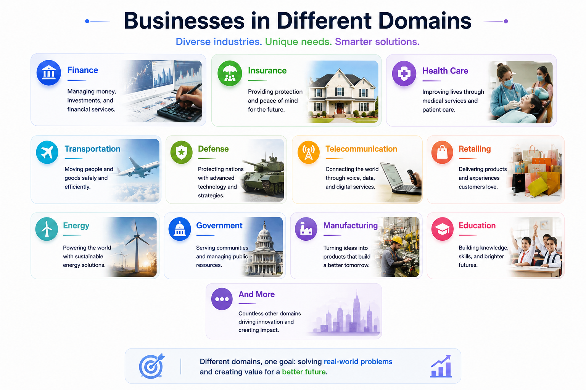
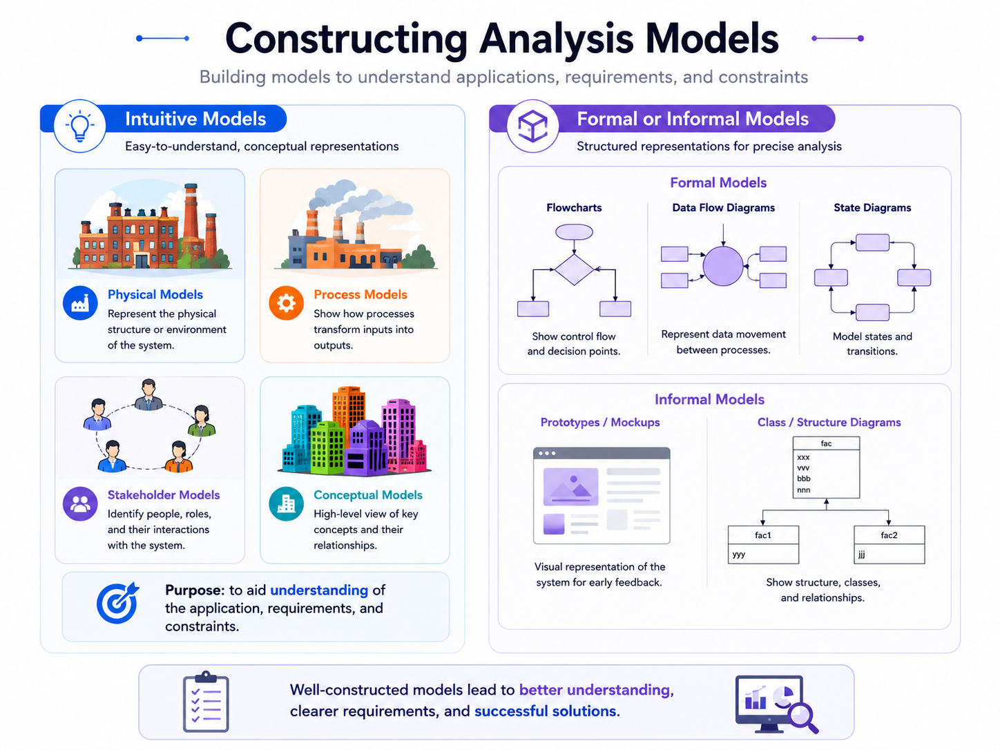
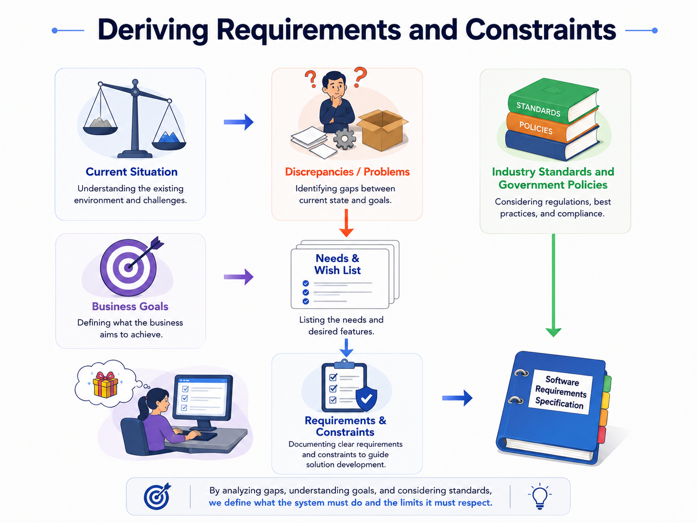

Information Collection & Analysis
Strong requirements come from multiple evidence sources, domain understanding and models that expose hidden assumptions.
Select suitable information sources, investigate the domain, and turn evidence into requirements and constraints.
Use more than one window into reality
Goals, terminology and scope.
Domain knowledge and known practices.
Real data, workflow and controls.
Mandatory external constraints.
Structured input at scale.
Motivations, exceptions and tacit knowledge.
What people actually do.
Role, need and value in concise form.

Four question groups organize the investigation
How does the business operate? What surrounds the system?
What flows, inputs, outputs, delays and workarounds exist?
Who are the users? What outcomes and priorities matter?
What performance, security, standards and policy limits apply?

Give scattered evidence a shape stakeholders can challenge
Formal or informal models help the team understand the application, requirements and constraints. Their purpose is understanding—not decoration.

Requirements come from evidence, goals and constraints
Problems, goals, needs, procedures and policies.
Clarify, reconcile, model and identify constraints.
Functional requirements, qualities, interfaces and constraints.

SkyGate Adventure Park — deriving requirements from a real operational story
Imagine a large fantasy-themed adventure park. Guests buy tickets online, arrive with families, enter through smart gates, reserve popular quests and rides, receive live waiting-time updates, purchase food and merchandise, and use a mobile app to navigate the park. Some attractions have age, height or health restrictions. Parents may link children to a family account. Operators temporarily close attractions because of weather or technical problems, while emergency staff must quickly locate affected zones and communicate instructions. Today, several activities are disconnected: ticketing uses one system, ride reservations another, restaurants use separate point-of-sale terminals, and staff sometimes announce closures manually. Guests complain about duplicate queues, missed reservations and discovering restrictions only after reaching an attraction. Management therefore proposes the SkyGate Experience System (SES): one integrated platform connecting guests, gates, attractions, staff and operational services.
A family buys tickets and creates linked guest profiles before the visit.
Smart gates validate admission while preserving each guest's entitlements.
Guests discover quests, check restrictions and reserve attraction slots.
The app reacts to queues, closures and schedule changes with useful alternatives.
Staff monitor capacity, incidents and attraction status from one operational view.
How do we derive requirements from that story?
| Step | Evidence / question | Analysis action | Requirement outcome |
|---|---|---|---|
| 🔎 1. Discover | Interview guests, operators, safety staff and management; observe gates and queues. | Separate stated wishes from recurring operational problems. | Candidate needs and stakeholder goals. |
| 🧩 2. Understand | Why are reservations missed? Who controls restrictions? What happens during closure? | Map actors, workflows, rules, exceptions and external systems. | Domain model and system boundary. |
| 🎯 3. Derive functions | What services must SES provide to achieve each goal? | Convert goals and tasks into observable system behavior. | Functional requirements (FR). |
| ⚙️ 4. Derive qualities | How fast, secure, available, usable and scalable must those services be? | Attach measurable quality expectations and constraints. | Non-functional requirements (NFR). |
| ✅ 5. Check | Is each statement necessary, feasible, unambiguous and testable? | Review with stakeholders and define measurable acceptance evidence. | Validated candidate requirements for the SRS. |
10 Functional Requirements
10 Non-Functional Requirements
FR asks “What observable service or behavior must the system provide?” NFR asks “How well must it work, or what quality/constraint must it satisfy?” Notice that both types are written as complete, testable statements—not one-word labels such as “security” or “performance.”
Evidence → understanding → model → requirement. The next lesson shows one important way to express high-level functional goals: use cases.